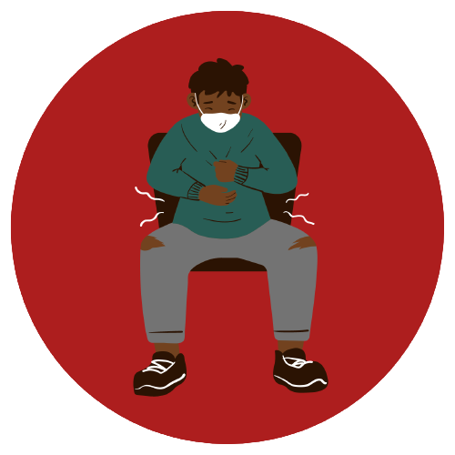
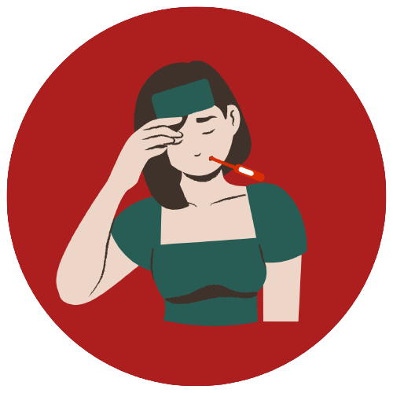
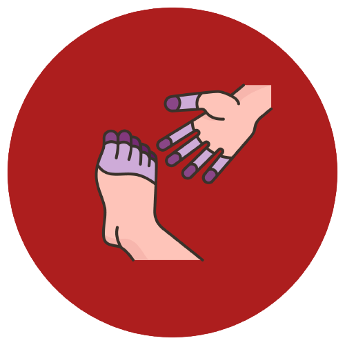

Reino: Animalia
Filo: Arthropoda
Classe: Insecta
Ordem: Diptera
Família: Culicidae
Gênero: Anopheles
Subgênero: Nyssorhynchus e Kerteszia
Espécie: Anopheles (Nyssorhynchus) darlingi
VETOR DA DOENÇA
As fêmeas que transmitem a malária para os humanos no momento em que vão se alimentar de sangue, e essa necessidade de sangue é para que possam produzir e desenvolver seus ovos (para o ciclo de vida dos novos mosquitos seja mantido).
Segundo a Organização Pan-Americana da Saúde (OPAN), existem mais de 400 espécies desse mosquito, e cerca de 30 deles são vetores importantes da malária.
Fonte (imagem): Portal Drauzio Varella
Transmissão
A transmissão da malária pode ocorrer de várias formas, conheça abaixo algumas delas:
Através do vetor
Ocorre por meio da picada da fêmea do mosquito Anopheles infectada por uma ou mais espécies do protozoário Plasmodium
Transfusão de sangue
Quando o doador apresenta sangue contaminado com o parasita da malária. São casos mais raros.
Seringas infectadas
Ocorre quando há uso de agulhas ou instrumentos contaminados com sangue de uma pessoa infectada.
Pela placenta (congênita) para o feto
Acontece quando a mãe infectada transmite o parasita para o feto durante a gravidez ou para o recém-nascido durante o parto.
Quando a fêmea do mosquito Anopheles, que está infectada, pica o ser humano, vai injetar o protozoário na forma de esporozíto.
Esses esporozítos vão seguir em direção ao fígado, que vao infectar os hepatócitos (as células que compõem o tecido hepático, do fígado).
Além disso, os esporozítos vão originar os merozoítos, que rompem os hepatócitos e infectam as hemácias.
Há mudanças nos merozoítos, em que eles se transformam em trofozoítos, que vão dar origem a novos merozoítos (que vão romper algumas hemácias
e infectar outras).
Quando as hemácias são rompidas, os esquizontes (estruturas encontradas no Plasmodium) vão ficar livres no sangue. É nesse momento em que os
sintomas da malária começam a se intensificar.
Sintomas da malária

Dor abdominal intensa
Que podem ser acompanhadas por manifestações de náuseas, vômitos
astenia, fadiga e diarreia.

Febre alta
Dependendo da espécie do parasita, a febre alta pode ser acompanhada por
calafrios, suores e cefaleia.
Mucosas amarelas
O envolvimento da malária acaba manifestando icterícia no indivíduo
(não confundir com mucosas hipocoradas).
Convulsão ou desorientação
Não confundir com o ataque paroxístico febril (calafrios seguidos por uma
fase febril, com temperaturas de 41°C).
Hipoglicemia
Casos de malária grave (infecção por P. falciparum), causado pelo consumo de glicose pelo próprio parasita.

Cianose
Extremidades azuladas na pele, nos lábios ou nas unhas (causadas por escassez de oxigênio no sangue)
Tratamento
O tratamento da doença envolve medicamentos antimaláricos para eliminar o parasita.
É importante ressaltar que tais tratamentos devem seguir a partir de instruções
de um médico. Alguns medicamentos antimaláricos são:
A cloroquina, por exemplo, é eficaz contra algumas espécies do parasita. Entretanto, não é eficaz contra o
Plasmodium falciparum, que adquiriu resistência ao medicamento.
Outros medicamentos prescritos são mefloquina, doxicilina, primaquina, entre outros.
Importante!!!
A escolha do medicamento dependerá do tipo de malária, da localização geográfica e da
resistência do parasita aos medicamentos.